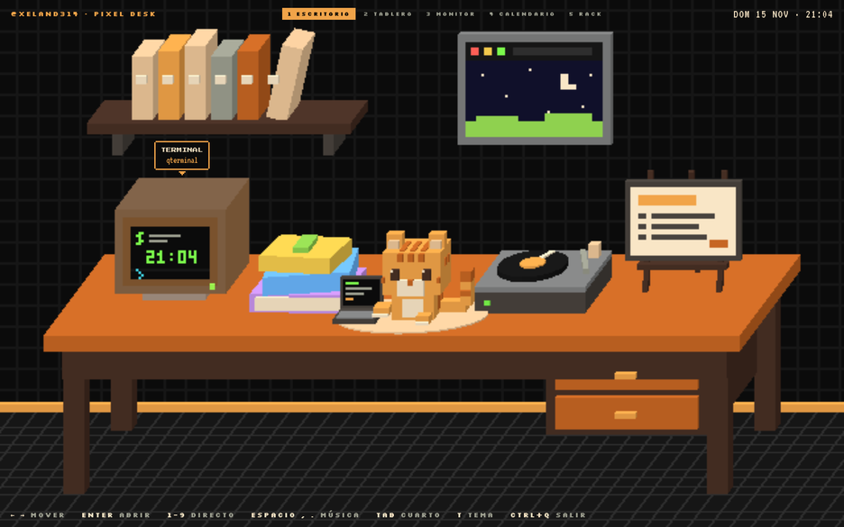
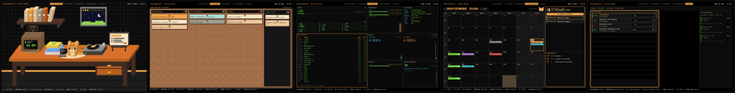
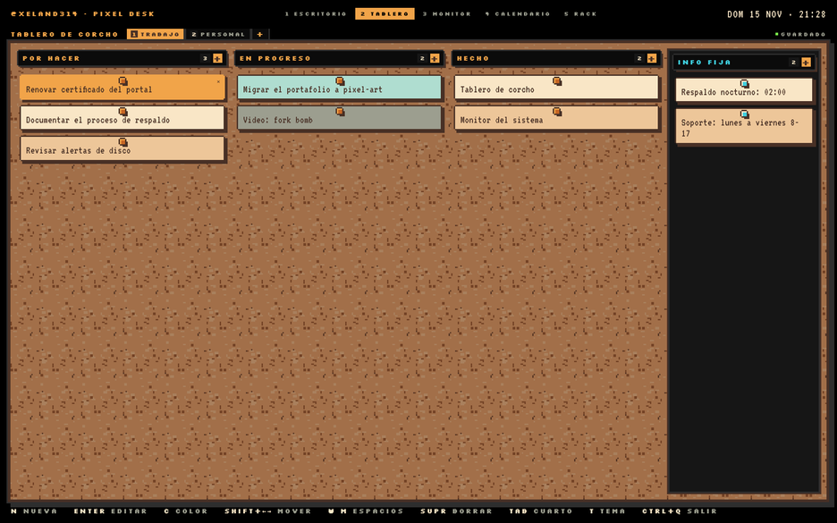
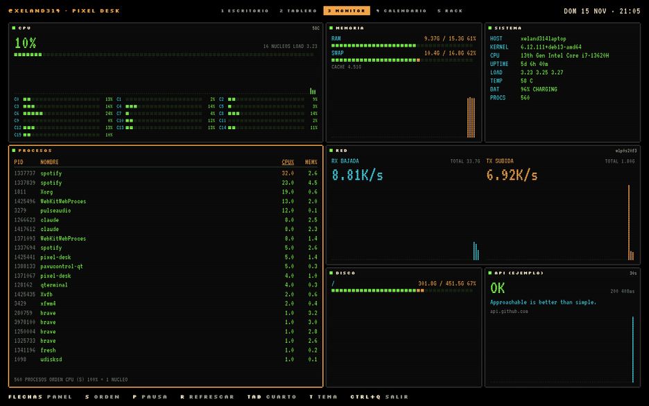
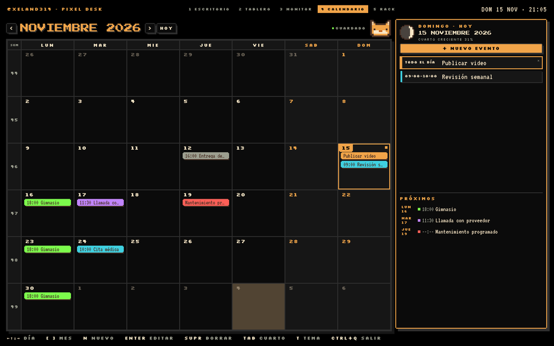
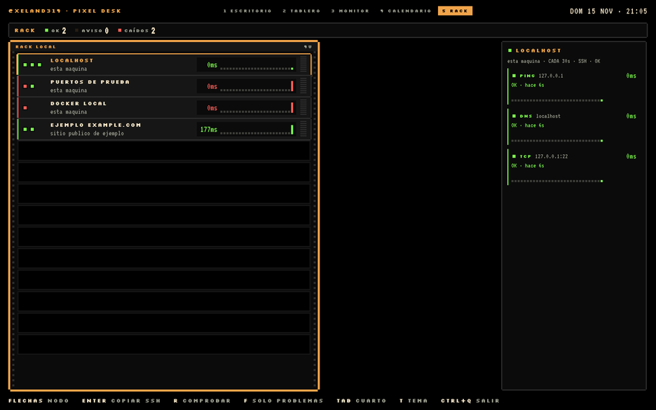

PROYECTO · PIXEL-DESK
pixel-desk






Un escritorio pixel-art 2.5D
Tu fondo de escritorio es una casa de cinco cuartos: cada objeto abre una app o herramienta.
Los cinco cuartos
Escritorio · Tablero · Monitor · Calendario · Rack de servidores.
Tablero de corcho
Kanban de 3 columnas + pizarra de info fija. Notas con chincheta, arrastrar y soltar.
Monitor del sistema
CPU por núcleo, RAM, procesos tipo htop, red, discos, temperatura, batería. Lee /proc y /sys.
Calendario
Mes completo, agenda, próximos 7 días, fase lunar y suscripciones ICS.
Rack de servidores
TCP, HTTP, TLS, ping, DNS y contenedores Docker. Comprobaciones HTTP con keyword.
Marcos de ventana, panel, menú, iconos y rofi salen de los mismos tokens de color.
T alterna en vivo, en cualquier cuarto. Paleta cover-creator-cli en modo claro.
Filtra tus comandos frecuentes; Enter copia y cierra. Nunca ejecuta nada.
Notas del día con hora, etiquetas, exporta la semana a Markdown. Archivo solo añadir.
Papirus → pixel-art con algoritmo determinista. ~550 iconos en 7 s.
Emblemas para Inicio, Escritorio, Documentos, Descargas, Música, Imágenes, Vídeos y Red.
Todo el escritorio a juego
Marcos, panel, menú, iconos y rofi salen de los mismos tokens. Claro/oscuro con T en vivo.
Los objetos abren apps
Monitor CRT → terminal · Libros → VS Code · Gato → rofi · Tocadiscos → Spotify · Cajones → paneles.
Bóveda y bitácora
Bóveda: filtra comandos, copia, nunca ejecuta. Bitácora: notas del día, etiquetas, exporta Markdown.
Iconos y carpetas
Papirus → pixel-art determinista (~550 iconos). Carpetas dibujadas a mano con emblemas.
Tecnologías
Go + WebKitGTK (sin Electron, 11 MB) · three.js 0.180 · GTK3 · /proc /sys · Netdata · ICS · Python (tema).
Hecho por @xeland314
Escritorio pixel-art para LXQt + xfwm4 en X11. Compila con Go, corre con WebKitGTK.

@xeland314